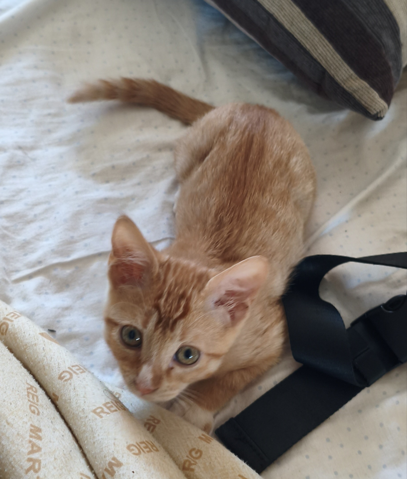

Hi, I’m Carles
Carles
Valladares García
Computer science graduate, Web Engineering student and a Valencian who prefers cachopo to paella.
Benvingut/da al meu lloc! There’s more to me than computing.
Explore my background
Where to start
Background
My education, work experience and a project to put what I have learned into practice.
Hobbies
Video games, tabletop adventures and judo: what I do away from screens… and in front of them.
Interests
The music, films and stories I enjoy coming back to.
Contact
Email, GitHub and LinkedIn to keep in touch.